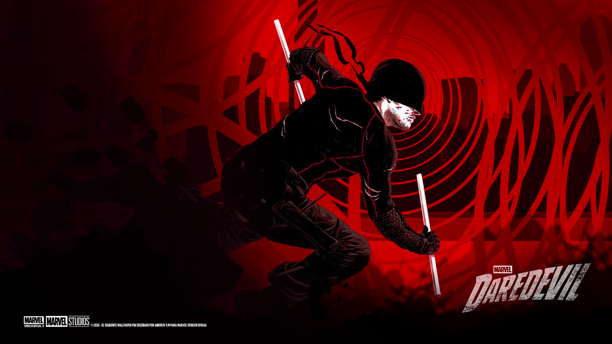

Amazing Comics
DaredevilDaredevil’s appeal lies in his resilience and humanity. He is not invincible like many superheroes; he gets hurt, makes mistakes, and struggles with moral dilemmas. His dual life as both a vigilante and a lawyer adds depth to his character, making him one of Marvel’s most compelling heroes.With upcoming projects in the Marvel Cinematic Universe, Daredevil continues to be a beloved, iconic superhero who embodies the fight for justice—both in and out of the courtroom. The most notorious enemy of Daredevil, Kingpin is a crime lord who controls much of New York's underworld. He has attempted multiple times to break Matt Murdock both physically and emotionally.
Devils Born Again
Matthew Michael Murdock was born and raised in Hell’s Kitchen. His father, Jack "Battlin’" Murdock, was a struggling boxer who raised Matt alone after his mother left them. Jack always pushed Matt to focus on academics, wanting a better life for his son. However, Matt's life changed forever when he saved a blind man from being hit by a truck carrying radioactive chemicals. The accident caused the chemicals to spill on Matt, blinding him but heightening his other senses to superhuman levels.After his father's murder by the Fixer for refusing to throw a fight, Matt vowed to fight crime in both the courtroom and the streets. He trained under Stick, a blind martial artist, who helped him hone his abilities and combat skills. As an adult, Matt became a lawyer by day, fighting for justice as Daredevil by night.